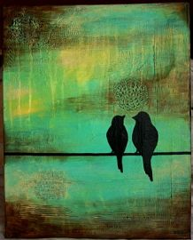
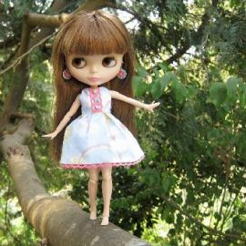
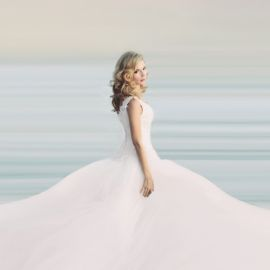
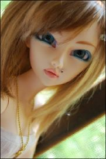

Sueño cuando era pequeño Sin preocupación en el corazón Sigo viendo aquel momento Se desvaneció, desapareció
Говорила, что меня не виделаОбнимала и тихо ненавиделаОбещала быть моей любимоюИ глазами хлопала невиннымиИ на все, на все мои признания
Hold a moment in timeAnd look to the skiesAnd we are frozen in lightNot a second goes by
I wouldn't wanna be anybody elseHey[Verse 1]You made me insecure,Told me I wasn’t good enough.But who are you to judge
Тёмными ночами кажется мне,Всё, о чем спрошу, узнаю во сне.Будет улыбаться в небе луна,Путь укажет мне она.Звёзды выше неба знают, где ты

А.ХТы, как чёрная кошка, ночь стучится в окошко и луна понемножку освещает нас.А.НТы, уверенный слишком и давно не мальчишка,
Yalla habibi, yalla yalla habibi,Nechun bugun kozlaring zabunli?So'nma jonim men bormanku,Bolma azal tunlarga asiri
Waiting for a lifetimeLike you're carved from the mountainSometimes I stand like a statueWaiting to surprise you

Налегке мы плывём с ветерком.В сентябре, босиком мы тайком. По щеке проведи ты рукой,Уголки моих губ успокой.И что меня ждёт?
Я думала, ты придёшь, Хотела в твои глаза ещё посмотреть тепло. Опять между нами дождь, и десять шагов назад.Куда это привело?
Даже если не сейчася мелькну в твоих глазахкаждой клеточкой своейя тебя любить умею (умею)

Я под дождём,А в твоих окнах свет есть.Не подождешь,Ты избегал встреч.Горят в такси чьи-то портреты,Кто-то спросилНаши приметы.
Сонна. Сонна. Сонна.Сонна. Сонна. Сонна.

Мягкий шёлк простынейМне напомнит нежность руки твоей.Мне не спится опять,В эту ночь могу я лишь мечтать.
I've been thinking 'bout,All things I'm searching for20 years from now, boy we could've done it all
Take me home, take me homeI know another place to beTake me home, take me homeYou deserve a girl like meCome on I know somewhere
The morning paperLook in the mirrorOn your key-chainOr in the coffee spoonOn your shirt sleeveIn the flat-screenIn your mailbox
We are, we are Hot GirlsBlack dresses tight, long curls,This is the time to rock youSo watch us now
Ooh ahh, I'm lost without your loveCan you hear me nowOoh ahh, I'm lost without your loveYour love..Your love..Your love..Ahhh
Igual que el mosquito mas tonto de la manadaYo sigo tu luz aunque me lleve a morirTe sigo como le siguen los puntos finales.